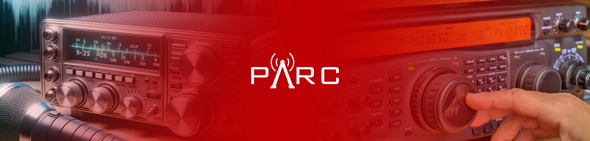
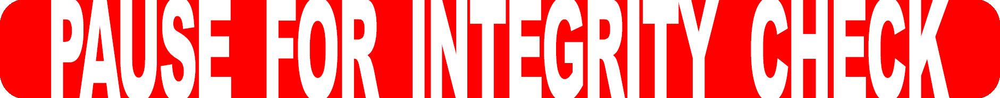

Main Content
BREAK OUT ROOM SCRIPT Romeo *R*
Ver. 20260408a
ATTENTION: All VE’s please mute your microphone at this time.
Before we begin, we want to bring your phone into the session. Is your phone and iPhone or something else?
(If it is an iPhone ask them to click on cancel)
(If it is something else, ask them to click on your image, not any of the selections in the dialogue box)
(If it is an iPhone ask them to click on cancel)
(If it is something else, ask them to click on your image, not any of the selections in the dialogue box)
I’m
IDENTIFICATION
- Please hold your driver’s license up to the camera on your computer screen close and steady.
- Flip it around to the reverse side.
- Put that in your back pocket or a drawer, out of view along with any other papers or documents.
Please start recording now.
Terms Agreement
Terms Agreement
-
We need you to verify that you have read the website instructions and agreed to the following terms:
- That you will share your entire screen.
- For the exam session will be recorded and stored.
- You have either removed or covered any sensitive or personal items, otherwise you have consented to the viewing and scanning of these items.
- And if the Exam Team suspects a possibility of cheating, they will terminate your exam, the exam fee will be forfeited, and you will be barred from taking any future online exams?
- Please answer with a verbal yes or no.
You may see a blue Okay button near the top of your screen that acknowledges a recording is in progress. Clicking on it will close that dialogue box.

SCREEN SHARE
- On the laptop, press the green or white “SHARE SCREEN” button at the bottom of the screen.
- Then press the blue “SHARE” button in the bottom center
of that dialog box.
[Do not let them select a screen, they must share the entire desktop.] - For a Mac computer:
[Look across the dock for any dots under the applications. The only apps that may have a dot under them are the finder, Calculator, and Zoom apps.]
Look at the top left corner of your screen for the apple, click on the apple. Now click on force quit which is about the fifth item down.
Hold your command key and click all items other than finder, calculator, and zoom. Then click force quit.
In the menu bar (bar across the top) on your Mac, click Control Center.
In Control Center, click the Do Not Disturb icon or Focus, then click Do Not Disturb for One Hour.
The Do Not Disturb icon appears in the menu bar to indicate Do Not Disturb is on. To close Control Center, click anywhere on the desktop.
Right click in the center of the screen and select “Use Stacks”. If version does not support, click “View” on Menu Bar and then Select “Use Stacks.” - If using a PC:
[Look across the task bar for any bars or lines under the applications. The only apps that may have a line under them are the Calculator and Zoom apps.]
Go to the bottom right-hand corner of the screen and look to the right of the me and date. You are looking for a text balloon, it may or may not have a number on it, and right click on it. Then click focus assist followed by clicking priority only. Some versions you may have to right click on the me.
Right click on the task bar to open Task Manager.
[(If this fails click CONTROL-SHIFT-ESCAPE all at once) Make sure all applications are closed except the ones we are using.] [Make sure all apps and processes are quit except for zoom.] - Open a browser in guest mode and fit it within the box
on your screen.
[Click profile picture, click on “Open guest profile”. Slide new browser down and close the one behind it. If using Safari, guest mode not needed.] - In the URL bar, please type EXAM.TOOLS and press enter.
[*IF IN DARK MODE*] Click on the black/white moon in the bottom right corner.- Select “JOIN EXAM SESSION”.
- On the top line, type your Team Identifier which is
[Team Identifier]. - On the second line, type the User PIN which is
[PIN] .
START EXAM
Start Timing Now
- In order to make this process go smoothly, we ask that you listen carefully and follow our instructions. Please do not get ahead of what we are asking you to do.
- Please check your name, address, email, and phone number.
- Please read ONLY your name out loud.
- After you verify your information is correct please click “START _____ EXAM”
- In the top right corner, you will see the number of questions remaining. Please move your mouse pointer up to that spot now.
- You will not use your mouse or trackpad anymore for the exam.
- To select your answers for the questions, simply press the “A”, “B”, “C”, or “D” keys on the keyboard. This will not only mark your answer, it will also automatically advance to the next question and light it up. The questions will be bottom justified because some questions have schematics above them.
- If you need to use the calculator, you may use the trackpad {mouse}. When finished with your calculation, click X to close, you will then need to click on the word remaining to refocus to the exam page and begin using the letters A, B, C, and D again.
- When you have answered all of the questions, the word “Remaining” will change to a gold “GRADE EXAM” button. After you finish, press the gold GRADE EXAM button without any further prompting from us, and that will give us your score.
- When you have answered all of the questions, the word “Remaining” will change to a “GRADE EXAM” button. After you finish, press the GRADE EXAM button without any further prompting from us, and that will give us your score.
- Please make sure to always keep both hands in view.
- We will now turn off our video and audio so that we don’t distract you. However, you must keep both of your devices active throughout the exam.
- GOOD LUCK! You may begin!
FINISH EXAM
- Please click the “GRADE EXAM” button and we will get your score.
- Would you like a screen shot of your name and score?
- Click on the “FINISH AND SIGN FORMS” button.
- Click on “FINISH AND SIGN”
- Now scroll to the bottom of the page and type your full legal name on the line below the red sentence where says “FULL NAME OF SIGNER”.
- Now scribble your signature into the “SIGN HERE” box.
- Once you have finished with your signature, click on “SIGN DOCUMENTS” button below the box.
- Click on “FINISH SESSION”.
- Click on “LOG OUT”
- We will now stop recording and sharing your screen.
Please stop timing now.
POST EXAM INFORMATION
NEW: We will be emailing you a CSCE. Once the FCC receives your exam information, they will email you a link with payment instructions. You have 10 days to make the payment directly to the FCC. After payment is received, the FCC will send a final email with a link to your Official License, valid for 30 days. Do not make any changes to your FCC record during that thirty-day period. Making changes may delay or void your application.UPGRADE: We will email you a CSCE with instructions on how to verify your upgrade online. That process should be completed by the end of next week. Do not make any changes to your FCC record until at least thirty days after your upgrade appears in the system. Making changes may delay or void your application.FOR YOUTH ONLY: Because you tested with PARC, you qualify for reimbursement of the $35.00 FCC License Fee through the ARRL. Instructions are available on our website after you receive your callsign.FOR LADIES ONLY: There is a national organization for women in amateur radio called the Young Ladies Radio League, or YLRL. We encourage you to look them up if you are interested in additional resources and opportunities.
FOR EXTRA CLASS ONLY: Congratulations on earning the highest license class in amateur radio. We invite you to join PARC Radio and consider becoming a Volunteer Examiner. You may volunteer as often as your schedule allows. If you are interested, please email ve@parcradio.org for details.
IMPORTANT: Please allow up to ten days for processing before contacting us or the FCC. Before reaching out, check your email spam and junk folders and review your FCC CORES account.
We invite you to join the ARRL and get involved with your local radio club. For more information about PARC’s online club, please use the telegram link on our website.STAYING INVOLVED CLOSING
Thank you for testing with PARC today. We look forward to hearing you on the air and hope to see you or your friends at a future exam session.
Before we let you go, do you have any questions or comments for us?
[PAUSE FOR CONGRATULATIONS AND COMMENTS.]
For follow-up questions, please contact us through our Facebook page or review the FAQ page on our website.
Please make Zoom full screen. In the chat, you will see a link to the What’s Next page. Click the link,[wait] bookmark it,[wait] and review the next steps. It includes payment information, helpful links, and special offers available to you.
The instructions to join PARC’s online club are on that page as well.
You are free to leave the meeting. Click Leave Meeting in the bottomright corner of your screen. Please remember to remove your second device as well.
- 73!